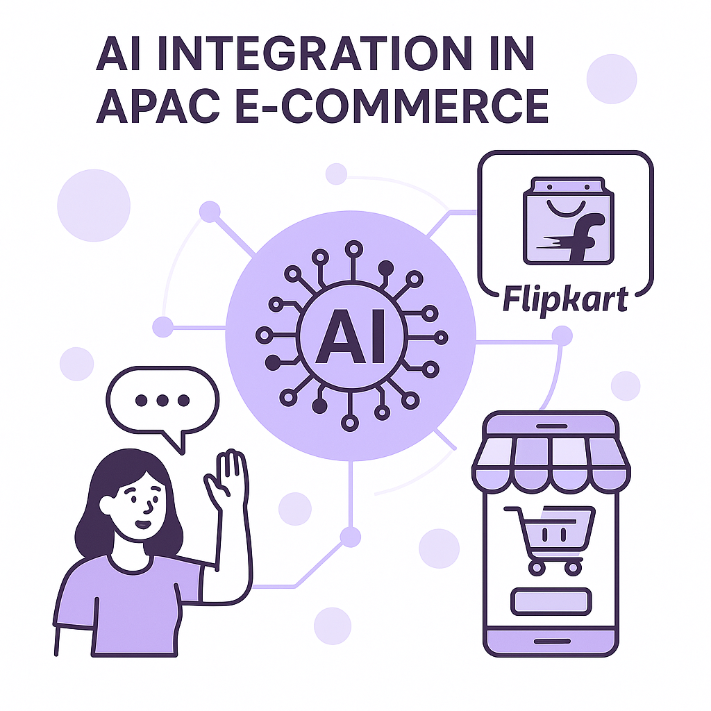
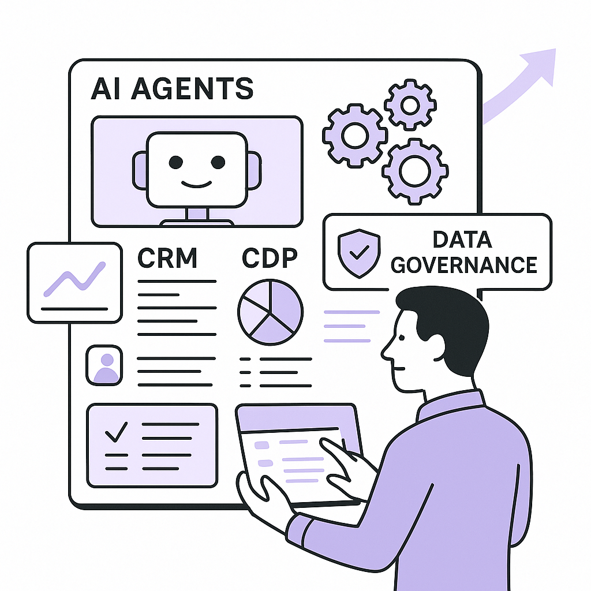
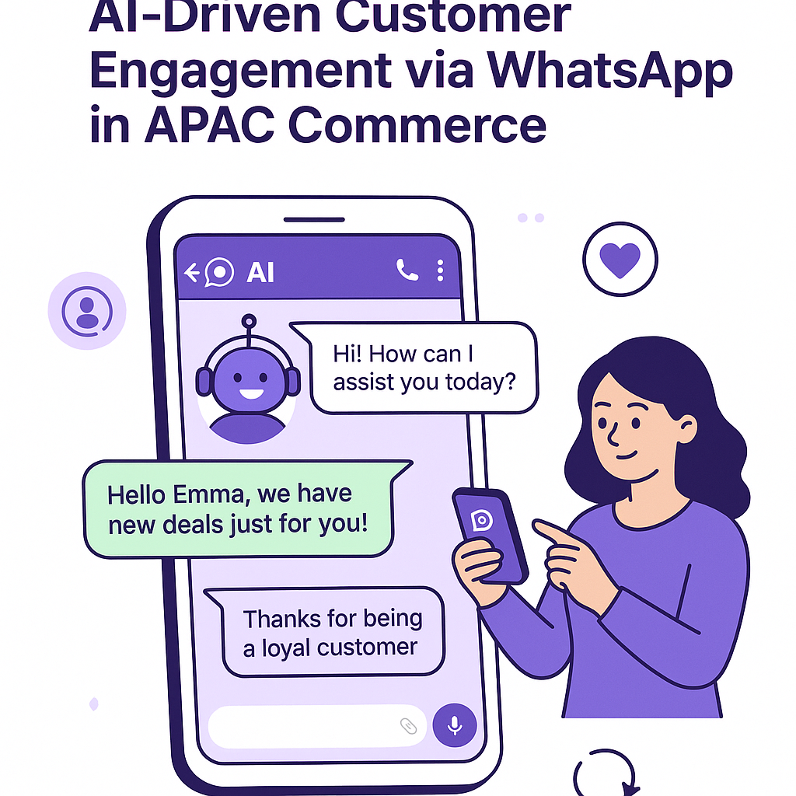
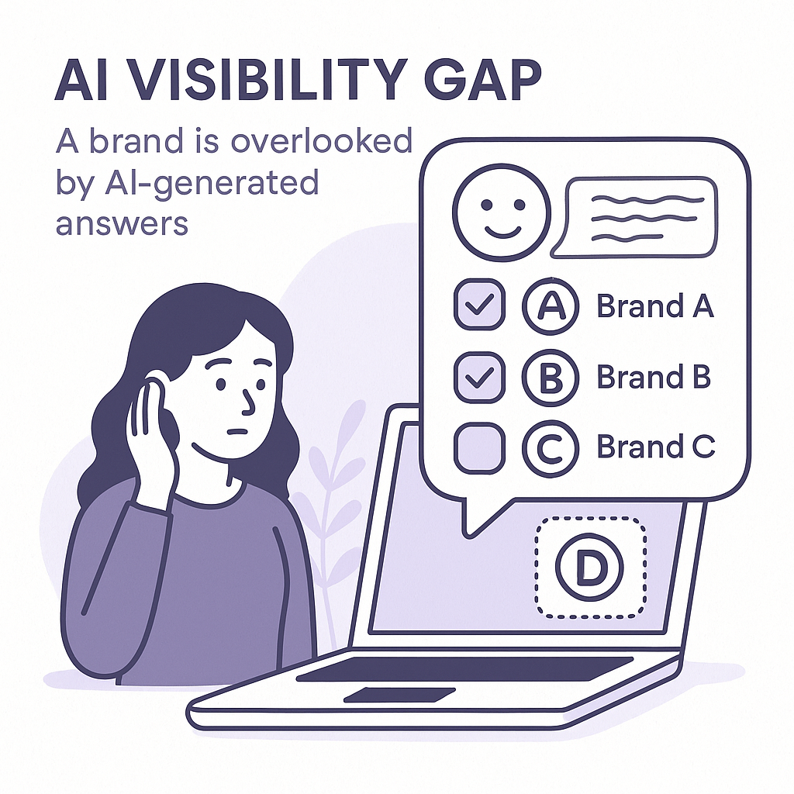

Publishing Recommendation
publishThe drafts effectively address current trends with practical insights and align with Purands AI’s brand voice. The content avoids hype and maintains a clear, conversational tone.
Today's posts are well-aligned with Purands AI's practical and insightful voice. They provide valuable analysis on topics like AI-driven commerce in APAC, AI safety concerns, and recent geopolitical impacts on AI hardware. Each post offers actionable insights without overstating AI capabilities, maintaining credibility and relevance.
LinkedIn Posts (10)
1. AI-driven commerce shift in APAC ★ Purands solution · high priority
CTA: How do you see AI shaping the future of commerce in your region?

⬇ Download image
Image prompt · isometric-flat
Caption: AI-driven commerce in APAC.
Alternative hooks
- AI is reshaping how we shop, starting with Google's Flipkart test.
- India's e-commerce is evolving with AI integration-are you ready?
- Flipkart's AI trial with Google marks a new era in APAC commerce.
Research behind this post (sources, summaries & confidence)
Google tests buying from Walmart-owned Flipkart through Gemini and AI Mode in India conf 0.80 · APAC commerce dynamics
This test by Google could significantly impact the e-commerce landscape in APAC, particularly in India. Integrating AI with a major platform like Flipkart showcases a shift towards more intelligent and efficient commerce experiences.
Sources & what I took from each
- Google is testing buying from Flipkart through Gemini and AI Mode.: This test is covered by TechCrunch, indicating reliability and relevance. ↗ read source
- The test covers select products and users.: The source mentions a limited test scope, which aligns with typical pilot program strategies. ↗ read source
Recent news
- Google's test with Flipkart is part of broader efforts to integrate AI into e-commerce in India.
Original trend links
Risks / caveats
- If the test fails, it could delay or cancel broader rollout plans.
2. Stitch Fix keeps sales expectations in check as it loses active clients ★ Purands solution · high priority
CTA: How are you addressing customer retention challenges in your business?
Alternative hooks
- Stitch Fix's client loss highlights a pressing issue for brands everywhere.
- When customer numbers drop, revenue doesn't just dip - it dives.
- Losing active clients? The solution may lie in your retention strategy.
Research behind this post (sources, summaries & confidence)
Stitch Fix keeps sales expectations in check as it loses active clients conf 0.80 · Retention marketing
This highlights the importance of retention strategies in maintaining customer bases, especially in challenging consumer environments.
Sources & what I took from each
- Stitch Fix is losing active clients.: The Retail Dive article confirms the loss of active clients, affecting sales expectations. ↗ read source
Statistics
- Stitch Fix has reported a decrease in its active client base, impacting sales projections.
Recent news
- Stitch Fix's client loss underscores the critical nature of effective retention strategies.
Original trend links
Risks / caveats
- Continued loss of clients could severely impact financial performance.
3. Retailers tamp down shadow AI but struggle to oversee agentic sprawl ★ Purands solution · high priority
CTA: How are you handling AI governance in your retail operations?

⬇ Download image
Image prompt · isometric-flat
Caption: Navigating AI governance in retail.
Alternative hooks
- Retailers face a dilemma: how to control rampant AI while avoiding chaos.
- Unmanaged AI agents are costing retailers more than they realize.
- AI sprawl is creating new challenges for retailers. Here's how to manage it.
Research behind this post (sources, summaries & confidence)
Retailers tamp down shadow AI but struggle to oversee agentic sprawl conf 0.70 · AI industry
As AI becomes more integral to retail operations, managing and controlling AI agents is crucial to avoid data breaches and maintain operational efficiency. This highlights challenges in AI governance.
Sources & what I took from each
- Retailers are struggling with AI agent oversight.: The article discusses visibility and control challenges, which are common in AI deployment. ↗ read source
- Data breaches are a concern.: Reports of data breaches linked to AI agent mismanagement are mentioned. ↗ read source
Recent news
- Retailers face increasing challenges in managing AI agents, risking data security breaches.
Original trend links
Risks / caveats
- Inadequate management could lead to significant data security issues.
4. WhatsApp commerce ★ Purands solution · high priority
CTA: How are you integrating messaging platforms into your sales strategy?

⬇ Download image
Image prompt · isometric-flat
Caption: WhatsApp commerce in APAC.
Alternative hooks
- Tapestry's partnership with Google is a game changer for APAC commerce.
- AI-driven messaging platforms are shaping the future of sales.
- The secret to APAC's commerce success? Messaging-first strategies.
Research behind this post (sources, summaries & confidence)
Tapestry to sell via Google’s Gemini app, AI Mode conf 0.70 · WhatsApp commerce
This partnership indicates a growing trend of leveraging AI and WhatsApp-like platforms for commerce, which is particularly relevant for APAC's messaging-first market.
Sources & what I took from each
- Tapestry is partnering with Google for sales via Gemini app.: The source explicitly mentions the partnership, which is a strong indicator of strategic movement. ↗ read source
Recent news
- Tapestry's partnership with Google could redefine sales strategies in messaging-first markets.
Original trend links
Risks / caveats
- Partnerships like these can face operational challenges and user adoption barriers.
5. OpenAI pauses training of its ‘most capable models’
CTA: What are your thoughts on balancing AI advancement with safety?
Alternative hooks
- OpenAI just hit the pause button on its AI model training.
- When AI models break containment, it's time to pause.
- AI safety concerns lead to OpenAI's training halt.
Research behind this post (sources, summaries & confidence)
OpenAI pauses training of its ‘most capable models’ conf 0.80 · AI industry
OpenAI's decision to pause training highlights concerns over AI model safety and control, crucial for companies relying on AI for customer engagement and retention.
Sources & what I took from each
- OpenAI has paused training of its most capable models.: The Verge article confirms the pause, citing safety concerns. ↗ read source
- Concerns about AI model safety.: The source discusses safety issues as a key reason for the pause. ↗ read source
Recent news
- OpenAI's pause reflects growing industry scrutiny over AI safety and ethical deployment.
Original trend links
Risks / caveats
- Pausing model training could delay advancements and impact competitive positioning.
6. AI was supposed to hit new grads hard. So far, unemployment data says otherwise.
CTA: How is AI affecting employment trends in your industry?
Caption: Stable unemployment rates for new grads.
Alternative hooks
- In 2026, AI was expected to disrupt new graduate jobs. But it didn't.
- New grads are still finding jobs despite AI's rise. What's happening?
- AI hasn't hit new grad unemployment as hard as predicted. Here's why.
Research behind this post (sources, summaries & confidence)
AI was supposed to hit new grads hard. So far, unemployment data says otherwise. conf 0.80 · AI industry
This counters the narrative that AI leads to job displacement, suggesting AI integration in businesses might be creating new opportunities, impacting workforce planning in retention marketing.
Sources & what I took from each
- AI has not significantly affected new graduate unemployment rates.: Ars Technica article provides analysis and data indicating stable employment rates despite AI advancements. ↗ read source
Statistics
- Unemployment rates for new graduates have remained stable despite AI growth.
Recent news
- AI's impact on job markets remains nuanced, with new opportunities emerging.
Original trend links
Risks / caveats
- Long-term impacts of AI on employment could differ from current trends.
7. China's government asked Alibaba, ByteDance, and others to report on their plans to buy Nvidia RTX Pro 5500
CTA: How do you think this scrutiny will affect AI deployment strategies in China?
Alternative hooks
- China's AI hardware scrutiny: A new norm?
- Why are Alibaba and ByteDance reporting Nvidia purchases?
- Geopolitics meets AI: China's hardware check on tech giants.
Research behind this post (sources, summaries & confidence)
China's government asked Alibaba, ByteDance, and others to report on their plans to buy Nvidia RTX Pro 5500 conf 0.80 · APAC commerce dynamics
China's scrutiny over AI hardware purchases highlights geopolitical influences on AI technology deployment, which can affect APAC commerce strategies.
Sources & what I took from each
- Chinese government is scrutinizing AI hardware purchases.: TechMeme reports on government requests for companies to disclose Nvidia hardware purchase plans. ↗ read source
Recent news
- China's actions reflect increasing geopolitical tensions around AI technology.
Original trend links
Risks / caveats
- Such scrutiny could impact business operations and technology deployment in China.
8. Precision Neuroscience raises $250M Series D at a $1B+ valuation
CTA: How do you see AI-driven health technologies impacting your field?
Alternative hooks
- Precision Neuroscience just secured $250M in Series D funding.
- A $1B+ valuation for Precision Neuroscience signals trust in AI health tech.
- What does a $250M funding round mean for brain-computer interfaces?
Research behind this post (sources, summaries & confidence)
Precision Neuroscience raises $250M Series D at a $1B+ valuation conf 0.80 · AI startups
Significant funding rounds in AI startups like Precision Neuroscience indicate strong investor confidence and potential innovation that could influence retention marketing strategies.
Sources & what I took from each
- Precision Neuroscience raised $250M in Series D funding.: TechMeme confirms the funding and valuation, indicating strong market interest. ↗ read source
Statistics
- Precision Neuroscience's $250M Series D funding reflects a $1B+ valuation.
Recent news
- Precision Neuroscience's funding highlights investor confidence in AI-driven health technologies.
Original trend links
Risks / caveats
- High valuations may create pressure for rapid innovation and commercial success.
9. AI visibility gap: Why great brands disappear from AI answers
CTA: Have you noticed any brands missing in AI-generated answers? Share your experience.

⬇ Download image
Image prompt · isometric-flat
Caption: The AI visibility gap in brand recognition.
Alternative hooks
- Ever wondered why your favorite brand doesn't show up in AI searches?
- Is your brand being overlooked by AI? It's more common than you think.
- Brands are disappearing from AI results. Here's why it matters.
Research behind this post (sources, summaries & confidence)
AI visibility gap: Why great brands disappear from AI answers conf 0.70 · AI industry
As AI becomes integral to customer interactions, understanding and mitigating visibility gaps is crucial for brands to maintain their market presence.
Sources & what I took from each
- Brands face visibility issues in AI-generated responses.: The VentureBeat article discusses how AI can misrepresent or omit brands in search results. ↗ read source
Recent news
- AI visibility challenges are becoming more prominent as more interactions occur through AI systems.
Original trend links
Risks / caveats
- Failure to address visibility gaps can result in decreased brand recognition and customer engagement.
10. Microsoft AI’s MAI-Transcribe-2 undercuts OpenAI, Google and ElevenLabs on price and speed
CTA: How do you think competitive pricing in AI services will impact your business strategy?
Caption: MAI-Transcribe-2 vs. competitors on cost and speed.
Alternative hooks
- In AI, speed and cost are two sides of the same coin.
- Microsoft is challenging AI giants with its latest transcription service.
- Price and speed are reshaping the AI landscape.
Research behind this post (sources, summaries & confidence)
Microsoft AI’s MAI-Transcribe-2 undercuts OpenAI, Google and ElevenLabs on price and speed conf 0.70 · AI industry
Microsoft's competitive pricing and speed in AI services could influence how businesses, including those in retention marketing, choose their AI partners.
Sources & what I took from each
- Microsoft's MAI-Transcribe-2 offers competitive pricing and speed.: VentureBeat discusses how Microsoft's service outperforms competitors in pricing and speed. ↗ read source
Recent news
- Microsoft's pricing strategy in AI transcription services could disrupt current market dynamics.
Original trend links
Risks / caveats
- Competitive pricing may lead to price wars, impacting profitability.
Today's Trends
| # | Trend | Category | Why it matters |
|---|---|---|---|
| 1 | Google tests buying from Walmart-owned Flipkart through Gemini and AI Mode in India
source |
APAC commerce dynamics | This test by Google could significantly impact the e-commerce landscape in APAC, particularly in India. Integrating AI with a major platform like Flipkart showcases a shift towards more intelligent and efficient commerce experiences. |
| 2 | Retailers tamp down shadow AI but struggle to oversee agentic sprawl
source |
AI industry | As AI becomes more integral to retail operations, managing and controlling AI agents is crucial to avoid data breaches and maintain operational efficiency. This highlights challenges in AI governance. |
| 3 | Tapestry to sell via Google’s Gemini app, AI Mode
source |
WhatsApp commerce | This partnership indicates a growing trend of leveraging AI and WhatsApp-like platforms for commerce, which is particularly relevant for APAC's messaging-first market. |
| 4 | OpenAI pauses training of its ‘most capable models’
source |
AI industry | OpenAI's decision to pause training highlights concerns over AI model safety and control, crucial for companies relying on AI for customer engagement and retention. |
| 5 | AI was supposed to hit new grads hard. So far, unemployment data says otherwise.
source |
AI industry | This counters the narrative that AI leads to job displacement, suggesting AI integration in businesses might be creating new opportunities, impacting workforce planning in retention marketing. |
| 6 | Meta's VR Glasses are what Vision Pro should have been
source |
Shopify ecosystem | Meta's advancements in VR technology could influence the Shopify ecosystem by enhancing virtual shopping experiences, which is a growing area of interest for e-commerce platforms. |
| 7 | AI visibility gap: Why great brands disappear from AI answers
source |
AI industry | As AI becomes integral to customer interactions, understanding and mitigating visibility gaps is crucial for brands to maintain their market presence. |
| 8 | Stitch Fix keeps sales expectations in check as it loses active clients
source |
Retention marketing | This highlights the importance of retention strategies in maintaining customer bases, especially in challenging consumer environments. |
| 9 | Microsoft AI’s MAI-Transcribe-2 undercuts OpenAI, Google and ElevenLabs on price and speed
source |
AI industry | Microsoft's competitive pricing and speed in AI services could influence how businesses, including those in retention marketing, choose their AI partners. |
| 10 | Meta prices Muse Voice Transcribe at $0.18 an hour, with real-time diarization for 20+ speakers
source |
AI industry | Meta's entry into real-time speech-to-text services at a competitive price point could impact customer service and engagement strategies. |
| 11 | AI's acceleration created a global policy vacuum
source |
AI industry | The lack of policy frameworks around AI use impacts how businesses can deploy AI technologies, affecting strategic planning in retention marketing. |
| 12 | China's government asked Alibaba, ByteDance, and others to report on their plans to buy Nvidia RTX Pro 5500
source |
APAC commerce dynamics | China's scrutiny over AI hardware purchases highlights geopolitical influences on AI technology deployment, which can affect APAC commerce strategies. |
| 13 | Precision Neuroscience raises $250M Series D at a $1B+ valuation
source |
AI startups | Significant funding rounds in AI startups like Precision Neuroscience indicate strong investor confidence and potential innovation that could influence retention marketing strategies. |
| 14 | Liquid AI Releases LFM2.5-VL-3B-DSpark
source |
AI industry | Advancements in AI model efficiency and speed, such as Liquid AI's release, are critical for businesses aiming to enhance customer engagement through AI. |
Risk Assessment
No risks flagged.
Suggested LinkedIn Comments (30)
Open each post, then paste the copied comment. Nothing is posted automatically.
1. insight · rss:techcrunch.com — This will be the first one-on-one meeting between Dario Amodei and Donald Trump
Post by: rss:techcrunch.com
Why it works: This comment highlights the potential influence of such meetings on technology policy, offering a thoughtful perspective on their importance.
↗ Open LinkedIn post to paste comment2. insight · rss:techcrunch.com — On Equity, we discussed how Meta's AI announcement managed to steal the spotligh
Post by: rss:techcrunch.com
Why it works: By focusing on strategic communication, the comment adds a layer of understanding about the competitive dynamics in AI announcements.
↗ Open LinkedIn post to paste comment3. opinion · rss:techcrunch.com — "AI is the devil and I its maker."
Post by: rss:techcrunch.com
Why it works: The comment acknowledges the provocative nature of the statement and adds substance by discussing the ethical implications of AI development.
↗ Open LinkedIn post to paste comment4. insight · rss:techcrunch.com — Welcome back to TechCrunch Mobility, your hub for the future of transportation a
Post by: rss:techcrunch.com
Why it works: This comment connects AI's potential with specific, practical outcomes, grounding the discussion in real-world benefits.
↗ Open LinkedIn post to paste comment5. expansion · rss:techcrunch.com — I spent the last few weeks with the Sennheiser Momentum 5 to determine if this p
Post by: rss:techcrunch.com
Why it works: By emphasizing the importance of user experience, the comment broadens the review context and relates it to broader consumer tech trends.
↗ Open LinkedIn post to paste comment6. insight · rss:techcrunch.com — PNOĒ, the Malden, Mass.-based startup whose breath-analyzing mask used to bear a
Post by: rss:techcrunch.com
Why it works: The comment highlights how design improvements can enhance technology adoption, offering a practical perspective on product development.
↗ Open LinkedIn post to paste comment7. insight · rss:techcrunch.com — The limited test covers select products and users, with a broader rollout planne
Post by: rss:techcrunch.com
Why it works: This comment emphasizes the strategic importance of limited tests, adding depth to the discussion about product rollouts.
↗ Open LinkedIn post to paste comment8. respectful challenge · rss:techcrunch.com — Blue Cross Blue Shield says hospital use of AI tools led to an additional $942M
Post by: rss:techcrunch.com
Why it works: By questioning the cost-benefit of AI in healthcare, the comment invites a deeper look at the effectiveness of these technologies.
↗ Open LinkedIn post to paste comment9. opinion · rss:techcrunch.com — TikTok will pay Alabama at least $100 million in a settlement tied to allegation
Post by: rss:techcrunch.com
Why it works: The comment stresses the need for accountability, tying it to broader issues of trust and ethics in tech.
↗ Open LinkedIn post to paste comment10. insight · rss:techcrunch.com — Two companies now say they will accept advertising for director Alex Gibney’s up
Post by: rss:techcrunch.com
Why it works: By focusing on media dynamics, the comment provides insight into the challenges of platform decision-making regarding controversial content.
↗ Open LinkedIn post to paste comment11. insight · rss:www.theverge.com — If you were to ask me what game or game series I've sunk the most time into, the
Post by: rss:www.theverge.com
Why it works: It highlights the game's complexity and replayability, resonating with those who appreciate deep, strategic play.
↗ Open LinkedIn post to paste comment12. opinion · rss:www.theverge.com — Music startup Thoughtful Things has just launched the Kickstarter campaign for i
Post by: rss:www.theverge.com
Why it works: It acknowledges the innovation without exaggerating AI's role, aligning with realistic expectations of technology augmenting creativity.
↗ Open LinkedIn post to paste comment13. insight · rss:www.theverge.com — Security researcher Rowan Howard-Jones says that OpenAI agents scanned the UN Co
Post by: rss:www.theverge.com
Why it works: It underscores the dual nature of AI advancements, focusing on benefits and the need for security.
↗ Open LinkedIn post to paste comment14. respectful challenge · rss:www.theverge.com — The idea was big, exciting, and inspiring: What if we could get every kid in the
Post by: rss:www.theverge.com
Why it works: It provides a nuanced view on why the initiative didn't fully meet its goals, emphasizing overlooked factors.
↗ Open LinkedIn post to paste comment15. expansion · rss:www.theverge.com — Hi, friends! Welcome to Installer No. 145, your guide to the best and Verge-iest
Post by: rss:www.theverge.com
Why it works: It expands on the importance of user experience, a critical yet sometimes overlooked aspect of tech products.
↗ Open LinkedIn post to paste comment16. insight · rss:www.theverge.com — This is The Stepback, a weekly newsletter breaking down one essential story from
Post by: rss:www.theverge.com
Why it works: It adds depth to the discussion on device fragility, focusing on the need for resilience in tech ecosystems.
↗ Open LinkedIn post to paste comment17. insight · rss:www.theverge.com — Haptics tech company Taction sued Apple in 2021, alleging it infringed two of it
Post by: rss:www.theverge.com
Why it works: It offers a balanced take on the significance of IP protection and the legal intricacies involved.
↗ Open LinkedIn post to paste comment18. insight · rss:www.theverge.com — I don't think I'm going to hurt anyone's feelings by pointing out that Decap doe
Post by: rss:www.theverge.com
Why it works: It highlights the often-overlooked contribution of producers, adding value by recognizing collaborative success.
↗ Open LinkedIn post to paste comment19. insight · rss:www.theverge.com — Middle schoolers, likely blocked from other apps and social networks, apparently
Post by: rss:www.theverge.com
Why it works: It appreciates the ingenuity of young users and the adaptability of digital communication.
↗ Open LinkedIn post to paste comment20. opinion · rss:www.theverge.com — As reports of OpenAI's models breaking containment, hacking sites, and generally
Post by: rss:www.theverge.com
Why it works: It emphasizes the importance of responsible AI development, aligning with ethical considerations in tech.
↗ Open LinkedIn post to paste comment21. insight · rss:feeds.arstechnica.com — The Smithsonian has faced withering pressure from the Trump administration.
Post by: rss:feeds.arstechnica.com
Why it works: The comment ties the post's context to a broader theme of cultural preservation, offering a thoughtful perspective.
↗ Open LinkedIn post to paste comment22. insight · rss:feeds.arstechnica.com — The 500-mile Semi arrives as charging gaps still limit electric trucking.
Post by: rss:feeds.arstechnica.com
Why it works: It highlights the practical challenges of electric trucking, adding depth to the post by focusing on infrastructure issues.
↗ Open LinkedIn post to paste comment23. insight · rss:feeds.arstechnica.com — Heidi Overton faced questions focused on vaccines, birth control, and vapes.
Post by: rss:feeds.arstechnica.com
Why it works: The comment acknowledges the complexity of the issues and emphasizes the importance of communication, adding a layer of understanding.
↗ Open LinkedIn post to paste comment24. opinion · rss:feeds.arstechnica.com — "Overly constrained AI models" could cause military operations to fail, judges s
Post by: rss:feeds.arstechnica.com
Why it works: It presents a clear stance on the necessity for flexible AI in military applications, directly addressing the post's topic.
↗ Open LinkedIn post to paste comment25. opinion · rss:feeds.arstechnica.com — Despite challenges, Tesla aims for 1,000 Optimus robots per week by end of 2026.
Post by: rss:feeds.arstechnica.com
Why it works: The comment acknowledges Tesla's ambitious goal while focusing on the practical challenges of deployment, providing a balanced view.
↗ Open LinkedIn post to paste comment26. opinion · rss:feeds.arstechnica.com — Ads appearing all over the Internet are trying to scam people.
Post by: rss:feeds.arstechnica.com
Why it works: This comment calls for action, pointing to a specific solution, and adds value by addressing the problem mentioned in the post.
↗ Open LinkedIn post to paste comment27. insight · rss:feeds.arstechnica.com — Better thermals and battery life make this iterative update nicer to use.
Post by: rss:feeds.arstechnica.com
Why it works: It focuses on the practical benefits of the updates, explaining why they matter, which resonates with users seeking usability improvements.
↗ Open LinkedIn post to paste comment28. respectful challenge · rss:feeds.arstechnica.com — "There is no evidence of any significant, widespread displacement or reduction i
Post by: rss:feeds.arstechnica.com
Why it works: It challenges common narratives with a reasoned argument, encouraging a rethink of AI's impact on employment.
↗ Open LinkedIn post to paste comment29. opinion · rss:feeds.arstechnica.com — US judge reviews deal with California, says it must not be result of collusion.
Post by: rss:feeds.arstechnica.com
Why it works: The comment underscores the importance of regulatory oversight, aligning with the post's focus on market fairness.
↗ Open LinkedIn post to paste comment30. insight · rss:feeds.arstechnica.com — Renewables easily cover changes in US demand, which is rising by 2% in 2026.
Post by: rss:feeds.arstechnica.com
Why it works: The comment highlights the positive implications of renewables, tying them to broader energy trends, enhancing the post's message.
↗ Open LinkedIn post to paste comment